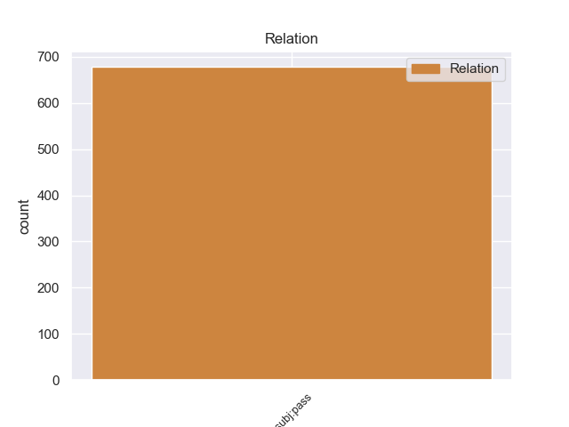
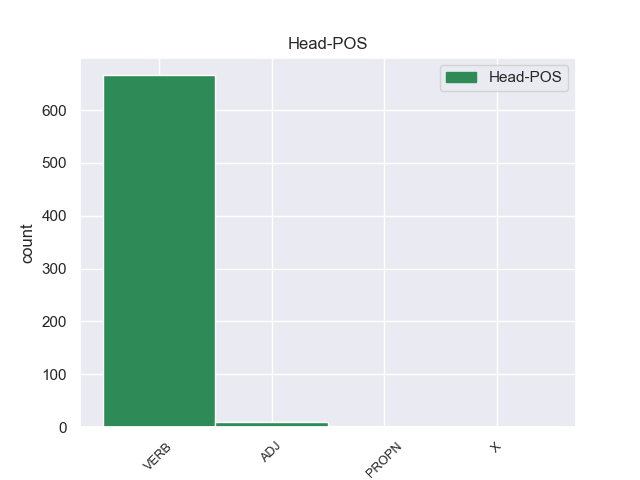
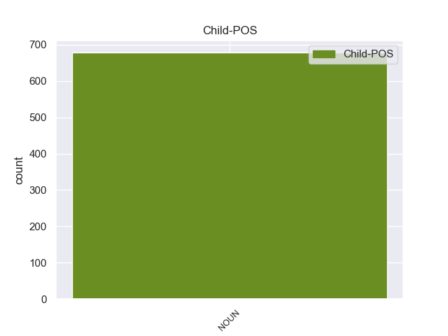

Distribution of features within this leaf



Agreement Rules sorted by frequency.
- When the dependent token is the passive nominal subject(nsubj:pass) of the head token, and the head token is VERB and the dependent token is NOUN.
1 En _ _ _ _ 0 _ _ _
2 1991 _ _ _ _ 0 _ _ _
3 , _ _ _ _ 0 _ _ _
4 como _ _ _ _ 0 _ _ _
5 ya _ _ _ _ 0 _ _ _
6 está _ _ _ _ 0 _ _ _
7 indicado _ _ _ _ 0 _ _ _
8 en _ _ _ _ 0 _ _ _
9 el _ _ _ _ 0 _ _ _
10 párrafo _ _ _ _ 0 _ _ _
11 anterior _ _ _ _ 0 _ _ _
12 , _ _ _ _ 0 _ _ _
13 se _ _ _ _ 0 _ _ _
14 creó _ _ _ _ 0 _ _ _
15 un _ _ _ _ 0 _ _ _
16 equipo _ _ _ _ 0 _ _ _
17 ad _ _ _ _ 0 _ _ _
18 hoc _ _ _ _ 0 _ _ _
19 para _ _ _ _ 0 _ _ _
20 averiguar _ _ _ _ 0 _ _ _
21 como _ _ _ _ 0 _ _ _
22 se _ _ _ _ 0 _ _ _
23 podía _ _ _ _ 0 _ _ _
24 desarrollar _ _ _ _ 0 _ _ _
25 el _ _ _ _ 0 _ _ _
26 Dialogo _ _ _ _ 0 _ _ _
27 Social _ _ _ _ 0 _ _ _
28 , _ _ _ _ 0 _ _ _
29 este _ _ _ _ 0 _ _ _
30 equipo equipo NOUN _ Gender=Masc|Number=Sing 32 nsubj:pass _ _
31 estaba _ _ _ _ 0 _ _ _
32 formado formado VERB _ Gender=Masc|Number=Sing|VerbForm=Part 0 _ _ _
33 por _ _ _ _ 0 _ _ _
34 representantes _ _ _ _ 0 _ _ _
35 de _ _ _ _ 0 _ _ _
36 todas _ _ _ _ 0 _ _ _
37 las _ _ _ _ 0 _ _ _
38 organizaciones _ _ _ _ 0 _ _ _
39 relacionadas _ _ _ _ 0 _ _ _
40 con _ _ _ _ 0 _ _ _
41 CES _ _ _ _ 0 _ _ _
42 , _ _ _ _ 0 _ _ _
43 UNICE _ _ _ _ 0 _ _ _
44 y _ _ _ _ 0 _ _ _
45 CEEP _ _ _ _ 0 _ _ _
46 ; _ _ _ _ 0 _ _ _
1 Desde _ _ _ _ 0 _ _ _
2 la _ _ _ _ 0 _ _ _
3 antigüedad _ _ _ _ 0 _ _ _
4 la _ _ _ _ 0 _ _ _
5 puerta puerta NOUN _ Gender=Fem|Number=Sing 12 nsubj:pass _ _
6 de _ _ _ _ 0 _ _ _
7 la _ _ _ _ 0 _ _ _
8 torre _ _ _ _ 0 _ _ _
9 era _ _ _ _ 0 _ _ _
10 considerada _ _ _ _ 0 _ _ _
11 la _ _ _ _ 0 _ _ _
12 principal principal ADJ _ Number=Sing 0 _ _ _
13 , _ _ _ _ 0 _ _ _
14 la _ _ _ _ 0 _ _ _
15 puerta _ _ _ _ 0 _ _ _
16 " _ _ _ _ 0 _ _ _
17 santa _ _ _ _ 0 _ _ _
18 " _ _ _ _ 0 _ _ _
19 de _ _ _ _ 0 _ _ _
20 el _ _ _ _ 0 _ _ _
21 Kremlin _ _ _ _ 0 _ _ _
22 . _ _ _ _ 0 _ _ _
1 Es _ _ _ _ 0 _ _ _
2 por _ _ _ _ 0 _ _ _
3 ello _ _ _ _ 0 _ _ _
4 que _ _ _ _ 0 _ _ _
5 , _ _ _ _ 0 _ _ _
6 antes _ _ _ _ 0 _ _ _
7 que _ _ _ _ 0 _ _ _
8 la _ _ _ _ 0 _ _ _
9 vía vía NOUN _ Gender=Fem|Number=Sing 12 nsubj:pass _ _
10 fuera _ _ _ _ 0 _ _ _
11 llamada _ _ _ _ 0 _ _ _
12 jirón jirón PROPN _ Gender=Masc|Number=Sing 0 _ _ _
13 Junín _ _ _ _ 0 _ _ _
14 , _ _ _ _ 0 _ _ _
15 cada _ _ _ _ 0 _ _ _
16 una _ _ _ _ 0 _ _ _
17 de _ _ _ _ 0 _ _ _
18 sus _ _ _ _ 0 _ _ _
19 13 _ _ _ _ 0 _ _ _
20 cuadras _ _ _ _ 0 _ _ _
21 tenía _ _ _ _ 0 _ _ _
22 un _ _ _ _ 0 _ _ _
23 nombre _ _ _ _ 0 _ _ _
24 distinto _ _ _ _ 0 _ _ _
25 . _ _ _ _ 0 _ _ _
1 Más _ _ _ _ 0 _ _ _
2 tarde _ _ _ _ 0 _ _ _
3 , _ _ _ _ 0 _ _ _
4 en _ _ _ _ 0 _ _ _
5 el _ _ _ _ 0 _ _ _
6 capítulo _ _ _ _ 0 _ _ _
7 4 _ _ _ _ 0 _ _ _
8 , _ _ _ _ 0 _ _ _
9 la _ _ _ _ 0 _ _ _
10 criatura criatura NOUN _ Gender=Fem|Number=Sing 17 nsubj:pass _ _
11 es _ _ _ _ 0 _ _ _
12 llamada _ _ _ _ 0 _ _ _
13 por _ _ _ _ 0 _ _ _
14 primera _ _ _ _ 0 _ _ _
15 vez _ _ _ _ 0 _ _ _
16 « _ _ _ _ 0 _ _ _
17 mûmak mûmak X _ Gender=Masc|Number=Sing 0 _ _ _
18 » _ _ _ _ 0 _ _ _
19 por _ _ _ _ 0 _ _ _
20 Damrod _ _ _ _ 0 _ _ _
21 , _ _ _ _ 0 _ _ _
22 uno _ _ _ _ 0 _ _ _
23 de _ _ _ _ 0 _ _ _
24 los _ _ _ _ 0 _ _ _
25 montaraces _ _ _ _ 0 _ _ _
26 de _ _ _ _ 0 _ _ _
27 Ithilien _ _ _ _ 0 _ _ _
28 bajo _ _ _ _ 0 _ _ _
29 las _ _ _ _ 0 _ _ _
30 órdenes _ _ _ _ 0 _ _ _
31 de _ _ _ _ 0 _ _ _
32 Faramir _ _ _ _ 0 _ _ _
33 . _ _ _ _ 0 _ _ _
Disagree Examples:
1 En _ _ _ _ 0 _ _ _
2 1695 _ _ _ _ 0 _ _ _
3 , _ _ _ _ 0 _ _ _
4 un _ _ _ _ 0 _ _ _
5 grupo grupo NOUN _ Gender=Masc|Number=Sing 10 nsubj:pass _ _
6 de _ _ _ _ 0 _ _ _
7 indios _ _ _ _ 0 _ _ _
8 teribes _ _ _ _ 0 _ _ _
9 fueron _ _ _ _ 0 _ _ _
10 enviados enviar VERB _ Gender=Masc|Number=Plur|Tense=Past|VerbForm=Part 0 _ _ _
11 a _ _ _ _ 0 _ _ _
12 la _ _ _ _ 0 _ _ _
13 región _ _ _ _ 0 _ _ _
14 de _ _ _ _ 0 _ _ _
15 Boruca _ _ _ _ 0 _ _ _
16 , _ _ _ _ 0 _ _ _
17 a _ _ _ _ 0 _ _ _
18 el _ _ _ _ 0 _ _ _
19 sureste _ _ _ _ 0 _ _ _
20 de _ _ _ _ 0 _ _ _
21 Costa _ _ _ _ 0 _ _ _
22 Rica _ _ _ _ 0 _ _ _
23 , _ _ _ _ 0 _ _ _
24 y _ _ _ _ 0 _ _ _
25 fundan _ _ _ _ 0 _ _ _
26 el _ _ _ _ 0 _ _ _
27 pueblo _ _ _ _ 0 _ _ _
28 de _ _ _ _ 0 _ _ _
29 San _ _ _ _ 0 _ _ _
30 Francisco _ _ _ _ 0 _ _ _
31 de _ _ _ _ 0 _ _ _
32 Térraba _ _ _ _ 0 _ _ _
33 . _ _ _ _ 0 _ _ _
1 En _ _ _ _ 0 _ _ _
2 la _ _ _ _ 0 _ _ _
3 primera _ _ _ _ 0 _ _ _
4 parte _ _ _ _ 0 _ _ _
5 de _ _ _ _ 0 _ _ _
6 ese _ _ _ _ 0 _ _ _
7 periodo _ _ _ _ 0 _ _ _
8 las _ _ _ _ 0 _ _ _
9 políticas política NOUN _ Gender=Fem|Number=Plur 21 nsubj:pass _ _
10 económicas _ _ _ _ 0 _ _ _
11 ( _ _ _ _ 0 _ _ _
12 ver _ _ _ _ 0 _ _ _
13 Economía _ _ _ _ 0 _ _ _
14 política _ _ _ _ 0 _ _ _
15 ) _ _ _ _ 0 _ _ _
16 de _ _ _ _ 0 _ _ _
17 ese _ _ _ _ 0 _ _ _
18 país _ _ _ _ 0 _ _ _
19 estaba _ _ _ _ 0 _ _ _
20 fuertemente _ _ _ _ 0 _ _ _
21 influida influido VERB _ Gender=Fem|Number=Sing|VerbForm=Part 0 _ _ _
22 por _ _ _ _ 0 _ _ _
23 la _ _ _ _ 0 _ _ _
24 llamada _ _ _ _ 0 _ _ _
25 síntesis _ _ _ _ 0 _ _ _
26 clásico _ _ _ _ 0 _ _ _
27 - _ _ _ _ 0 _ _ _
28 keynesiana _ _ _ _ 0 _ _ _
29 o _ _ _ _ 0 _ _ _
30 Síntesis _ _ _ _ 0 _ _ _
31 neoclásica _ _ _ _ 0 _ _ _
32 y _ _ _ _ 0 _ _ _
33 , _ _ _ _ 0 _ _ _
34 posteriormente _ _ _ _ 0 _ _ _
35 , _ _ _ _ 0 _ _ _
36 por _ _ _ _ 0 _ _ _
37 las _ _ _ _ 0 _ _ _
38 aproximaciones _ _ _ _ 0 _ _ _
39 de _ _ _ _ 0 _ _ _
40 el _ _ _ _ 0 _ _ _
41 Monetarismo _ _ _ _ 0 _ _ _
42 y _ _ _ _ 0 _ _ _
43 la _ _ _ _ 0 _ _ _
44 llamada _ _ _ _ 0 _ _ _
45 Escuela _ _ _ _ 0 _ _ _
46 de _ _ _ _ 0 _ _ _
47 Economía _ _ _ _ 0 _ _ _
48 de _ _ _ _ 0 _ _ _
49 Chicago _ _ _ _ 0 _ _ _
50 . _ _ _ _ 0 _ _ _
1 El _ _ _ _ 0 _ _ _
2 cerro cerro NOUN _ Gender=Masc|Number=Sing 11 nsubj:pass _ _
3 de _ _ _ _ 0 _ _ _
4 la _ _ _ _ 0 _ _ _
5 Bufa _ _ _ _ 0 _ _ _
6 y _ _ _ _ 0 _ _ _
7 sus _ _ _ _ 0 _ _ _
8 contornos _ _ _ _ 0 _ _ _
9 geográficos _ _ _ _ 0 _ _ _
10 estaban _ _ _ _ 0 _ _ _
11 poblados poblado VERB _ Gender=Masc|Number=Plur|VerbForm=Part 0 _ _ _
12 de _ _ _ _ 0 _ _ _
13 incesantes _ _ _ _ 0 _ _ _
14 y _ _ _ _ 0 _ _ _
15 variadas _ _ _ _ 0 _ _ _
16 formas _ _ _ _ 0 _ _ _
17 de _ _ _ _ 0 _ _ _
18 vida _ _ _ _ 0 _ _ _
19 de _ _ _ _ 0 _ _ _
20 los _ _ _ _ 0 _ _ _
21 reinos _ _ _ _ 0 _ _ _
22 vegetal _ _ _ _ 0 _ _ _
23 y _ _ _ _ 0 _ _ _
24 animal _ _ _ _ 0 _ _ _
25 . _ _ _ _ 0 _ _ _
1 El _ _ _ _ 0 _ _ _
2 yacimiento _ _ _ _ 0 _ _ _
3 ocupa _ _ _ _ 0 _ _ _
4 un _ _ _ _ 0 _ _ _
5 área _ _ _ _ 0 _ _ _
6 de _ _ _ _ 0 _ _ _
7 aproximadamente _ _ _ _ 0 _ _ _
8 26 _ _ _ _ 0 _ _ _
9 ha _ _ _ _ 0 _ _ _
10 y _ _ _ _ 0 _ _ _
11 la _ _ _ _ 0 _ _ _
12 mayoría mayoría NOUN _ Gender=Fem|Number=Sing 18 nsubj:pass _ _
13 de _ _ _ _ 0 _ _ _
14 las _ _ _ _ 0 _ _ _
15 estructuras _ _ _ _ 0 _ _ _
16 han _ _ _ _ 0 _ _ _
17 sido _ _ _ _ 0 _ _ _
18 identificadas identificado VERB _ Gender=Fem|Number=Plur|Tense=Past|VerbForm=Part 0 _ _ _
19 por _ _ _ _ 0 _ _ _
20 estudios _ _ _ _ 0 _ _ _
21 arqueológicos _ _ _ _ 0 _ _ _
22 . _ _ _ _ 0 _ _ _
1 Iniciando _ _ _ _ 0 _ _ _
2 en _ _ _ _ 0 _ _ _
3 2003 _ _ _ _ 0 _ _ _
4 , _ _ _ _ 0 _ _ _
5 una _ _ _ _ 0 _ _ _
6 serie serie NOUN _ Gender=Fem|Number=Sing 14 nsubj:pass _ _
7 de _ _ _ _ 0 _ _ _
8 novelas _ _ _ _ 0 _ _ _
9 de _ _ _ _ 0 _ _ _
10 Final _ _ _ _ 0 _ _ _
11 Fantasy _ _ _ _ 0 _ _ _
12 XI _ _ _ _ 0 _ _ _
13 fueron _ _ _ _ 0 _ _ _
14 escritas escrito VERB _ Gender=Fem|Number=Plur|Tense=Past|VerbForm=Part 0 _ _ _
15 por _ _ _ _ 0 _ _ _
16 Miyabi _ _ _ _ 0 _ _ _
17 Hasegawa _ _ _ _ 0 _ _ _
18 y _ _ _ _ 0 _ _ _
19 lanzadas _ _ _ _ 0 _ _ _
20 en _ _ _ _ 0 _ _ _
21 japonés _ _ _ _ 0 _ _ _
22 , _ _ _ _ 0 _ _ _
23 alemán _ _ _ _ 0 _ _ _
24 y _ _ _ _ 0 _ _ _
25 francés _ _ _ _ 0 _ _ _
26 . _ _ _ _ 0 _ _ _